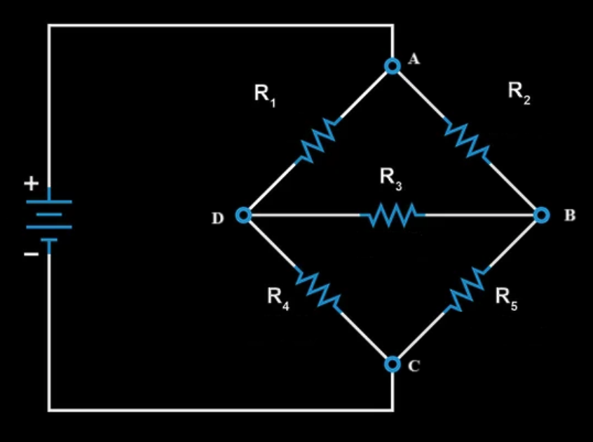
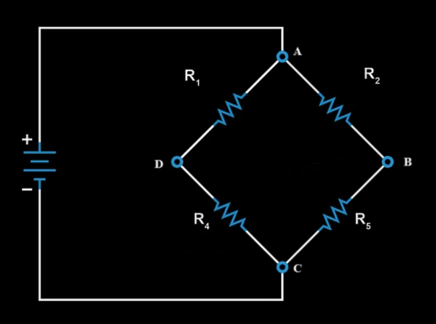
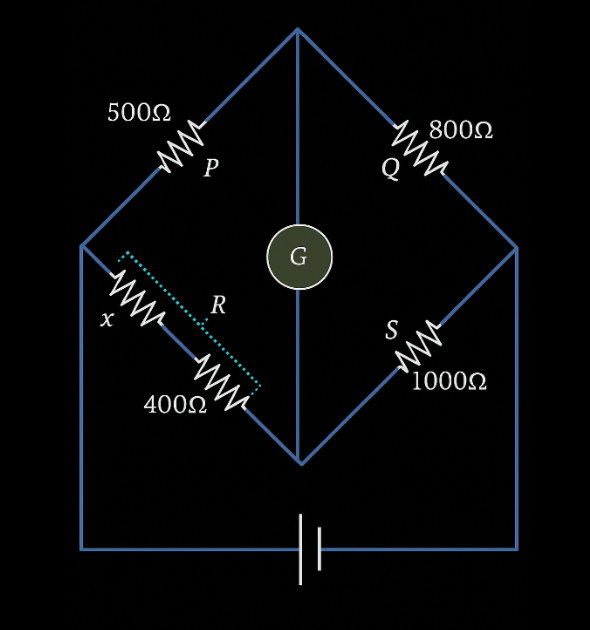

The Wheatstone bridge is a type of circuit usually used to measure resistance with high precision. The circuit is represented on the following scheme:

Using Kirchhoff’s law we can find that if the current flowing from point B to point D is equal to zero (if there is no current flowing between the two points) that the next formula is true for the resistances:
\[\frac{R_1}{R_2} = \frac{R_4}{R_5}\]
This also works in reverse order, if the resistors fulfill the formula above, no current will flow between points B and D, no matter the resistance or apparatus put in between them.
This means that, when observing current or resistance of the whole circuit, we can eliminate the current between points B and D because no current is flowing, and we can neglect the resistance between the 2 points because it won’t contribute to the total resistance of the circuit. Because of this, when redrawing the circuit for simplicity, we can redraw the part between the 2 points where current isn’t flowing (points B and D in our case) as a wire without any apparatus in between them, or we can just redraw the bridge without the wire between the 2 points, giving us the next, much simpler circuit:

How is the Wheatstone bridge used to measure resistance?
By putting a galvanometer that measures current between points B and D, we know that when the galvanometer measures a current of 0, the already mentioned formula is satisfied. Because of this, if we know the resistances of 3 of the resistors, we can easily find the resistance of the fourth one that we are trying to find.
Find x if the bridge is balanced.

Solution:
When the bridge is balanced, it means there is no current flowing through the galvanometer, so we get the next equation: